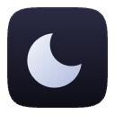

SleepyTube privacy policy
Last updated 21 November 2026
SleepyTube is a Chrome extension that changes how YouTube videos sound and look to help you fall asleep. It does not collect, sell or share any personal data.
What it stores
Your sound and screen settings and your chosen colour theme are saved in your own browser with chrome.storage.local. They stay on your device and are deleted when you remove the extension.
What it does not do
- No accounts, analytics, tracking or advertising.
- No network requests. Audio is processed on your device with the Web Audio API, and background noise is generated in the browser.
- It does not read or record your browsing history, the videos you watch or anything you type.
- It runs only on youtube.com, m.youtube.com and music.youtube.com.
Permissions
storage is the only permission it asks for, to remember your settings. Access to YouTube pages lets it adjust the video's audio and add screen filters there.
Links
The popup has an optional Buy Me a Coffee link. It opens buymeacoffee.com in a new tab, and that site's own privacy policy applies there.
Changes and contact
Any changes will be posted on this page. Questions are welcome on GitHub issues. The source code is public at github.com/kandekar007/sleepytube.